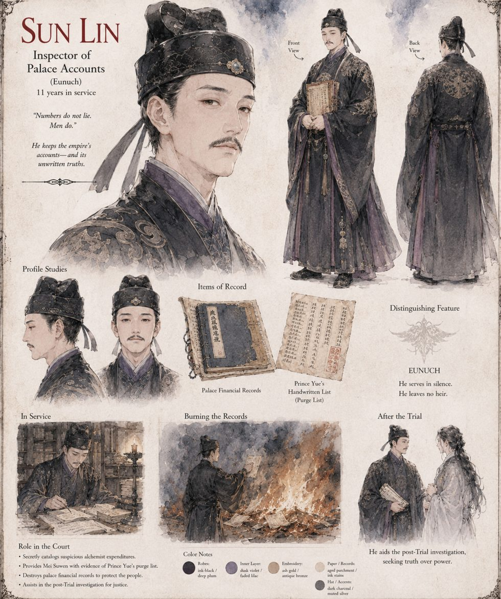

Sun Lin
Inspector of Palace Accounts · eunuch · eleven years in post
Holds a minor, unglamorous post that eunuchs have traditionally used to enrich themselves, and has spent eleven years using it instead to quietly catalog every occasion the Court Alchemists' expenditures made no defensible sense — out of a hatred for that ministry so old and so specific that he has stopped explaining its origin even to himself. A reputation for getting inconvenient answers written down, rather than quietly buried, is the one thing eleven years of auditing has earned him in full. So when a frightened chamber-servant finds a folded list among Prince Yue's discarded papers, it is Sun Lin she brings it to, and Sun Lin who hands it to Mei Suwen.
He helps her and Physician Kao measure what the Second Trial left behind, and during the siege he does the one thing no one asks of him: feeds the palace's own financial and requisition records into a brazier in the Ministry of Accounts, a few sheaves at a time, on the calm and entirely accurate theory that whichever administration inherits the city should not inherit the evidence to punish anyone with. His last letter to the Reckoner mentions that the Marshal once asked him whether an empire that killed its own competence deserved to be saved by either side. Then the correspondence stops, for reasons the record does not supply.
“Numbers do not lie. Men do.”
Appears in The Heavenly Thunder-Serpent